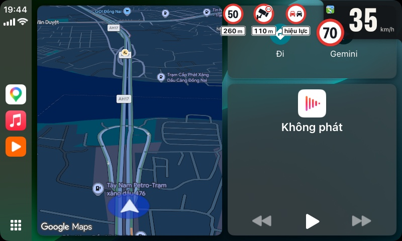
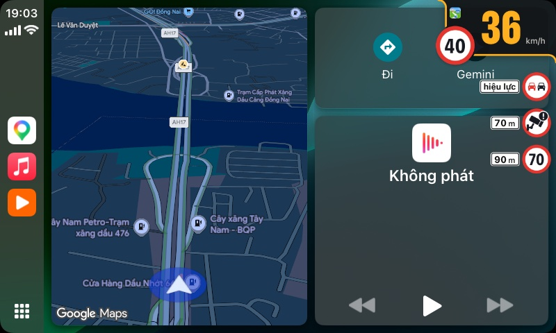
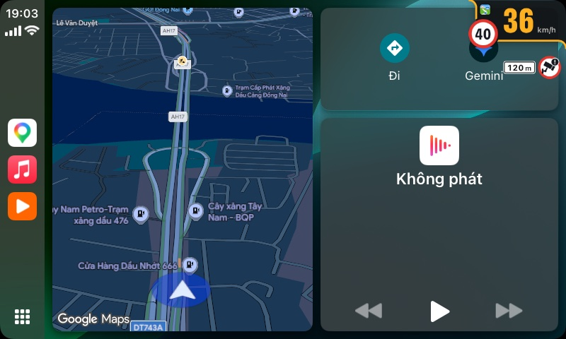
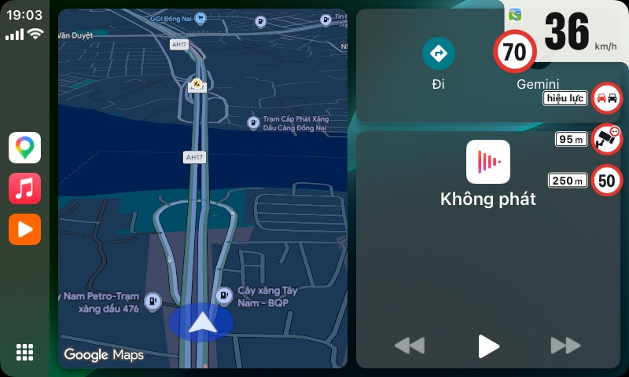
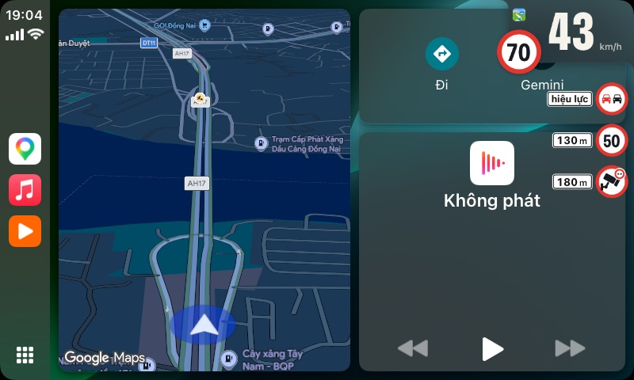
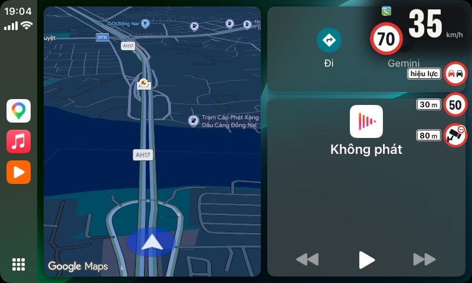
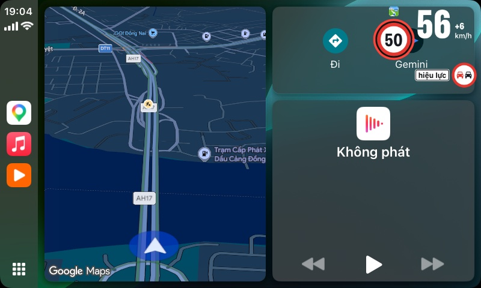
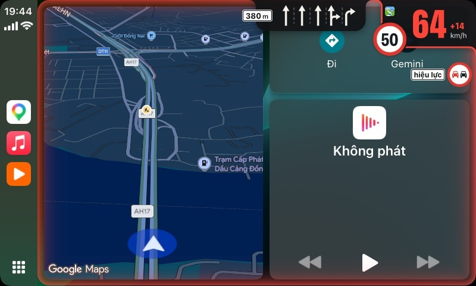
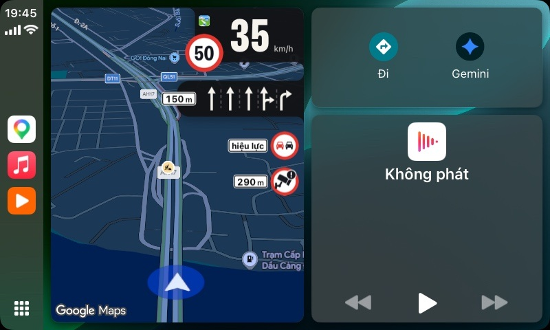

Biển đang hiệu lực đứng đầu
Biển đang áp dụng ghi “hiệu lực”; biển phía trước đếm từng mét.

Tốc độ, biển và làn đường nổi trên CarPlay, cho iPhone jailbreak.
Bốn bố cục, năm chất liệu, chụp trên CarPlay thật.







Biển đang áp dụng ghi “hiệu lực”; biển phía trước đếm từng mét.

Gần chạm giới hạn thì số vàng, vượt thì đỏ kèm mức vượt; mép màn hình nhấp nháy nếu bạn bật.

Trên bản đồ, ô Dashboard của CarPlay và trên iPhone.

Lộ trình giả lập trên Xa lộ Hà Nội, VietMap Live.
32 biển theo QCVN 41, và biển giới hạn với mọi con số.

Cấm vượt
Khi xe đã vào đoạn có biển, Lề ghi “hiệu lực” thay cho khoảng cách.
Trong Sileo hoặc Zebra, thêm https://repo.bechou.dev/
Sileo tự cài kèm mobilesubstrate và PreferenceLoader.
Trong Cài đặt › Lề.
Mở ứng dụng nguồn một lần; sau đó Lề tự đánh thức.